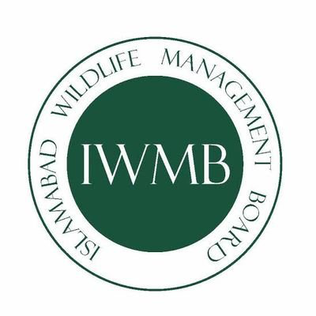

Experience & Education
My professional tenure in public sector policy research alongside my academic timeline.
Work Experience
July 2026 – Present
Data Analyst Intern
Ministry of Information Technology & Telecommunication (MoITT), Government of Pakistan
- Working directly under the guidance of the Additional Secretary and Member (Digital & Emerging Technologies) on national research initiatives.
- Conducting data-driven research on digital transformation, emerging technologies, and future workforce skill requirements across the public sector.
- Analyzing global digital competency frameworks to benchmark best practices for capacity-building programs targeting government officials.
- Preparing executive analytical reports, presentations, and policy recommendations in domains like AI, Data Analytics, Cybersecurity, and Cloud Governance.

March 2025 – April 2025
Conservation Volunteer
Islamabad Wildlife Management Board (IWMB)
- Volunteered on environmental preservation initiatives across the Margalla Hills National Park.
- Organized and executed community clean-up drives, plantation campaigns, and public awareness programs on wildlife conservation.
Academic Background

2023 – 2027 (Expected)
Bachelor of Science in Data Science
National University of Computer and Emerging Sciences (FAST NUCES), Islamabad
- Currently in 6th Semester (3rd Year). Rigorous curriculum covering core DSA, DBMS, Advanced Statistics, Data Warehousing, and Machine Learning.
August 2022 – May 2023
FSC Pre-Engineering
Rashid Minhas College Alipur
- Secured 93% Aggregate (1023 / 1100). Strong focus on Mathematics, Physics, and Chemistry.
January 2021 – January 2022
Matriculation in Science
Asif Saleem College Alipur
- Achieved Perfect Score: 100% (1100 / 1100). Awarded academic distinction.